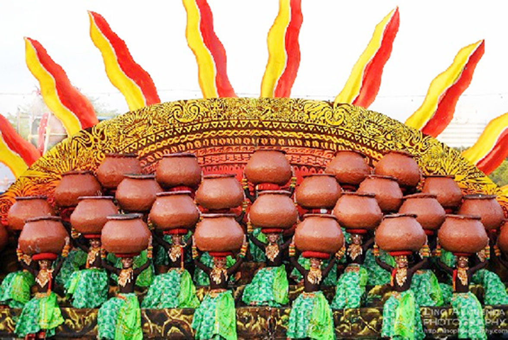
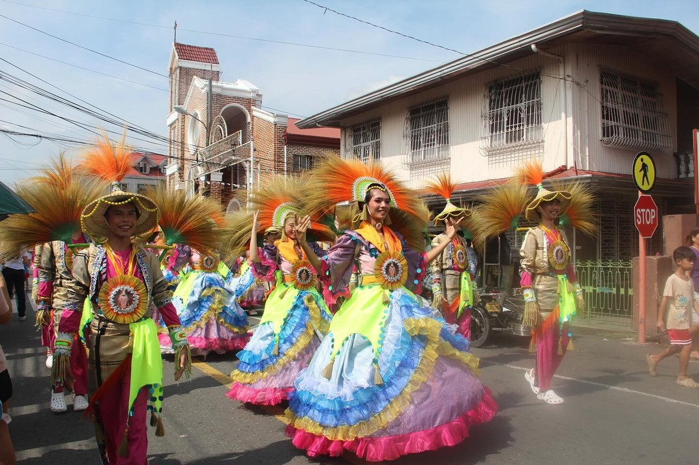
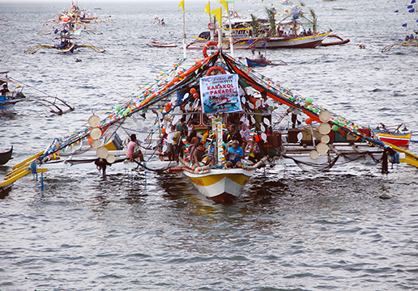

Celebrate Bataan’s cultural traditions, where faith, heritage, and community spirit live on through time.
Commemorating the city’s name origin from the clay pot “banga.” This festival symbolizes humble beginnings and the progress of Balanga City.

An agro-religious festival held annually in Mabatang. It combines a thanksgiving mass with agricultural pride.

Celebrated in Barangay Sabang to honor local fishermen and promote marine resource conservation.
